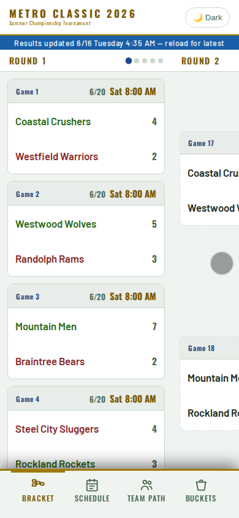
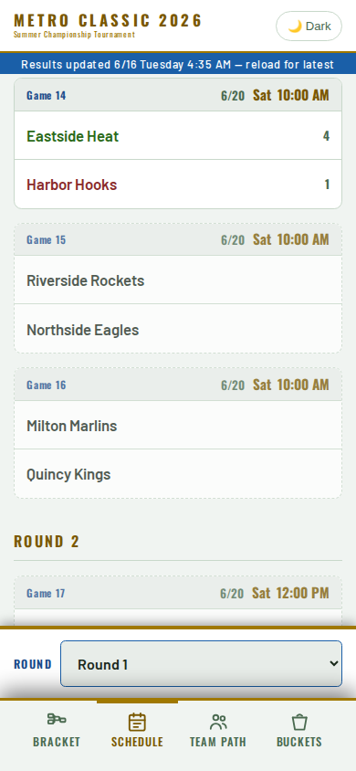
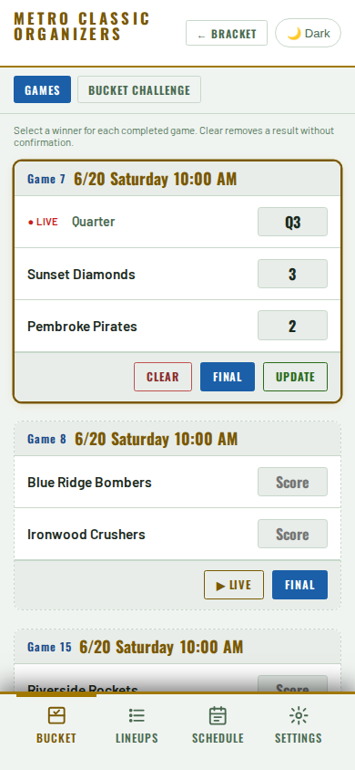
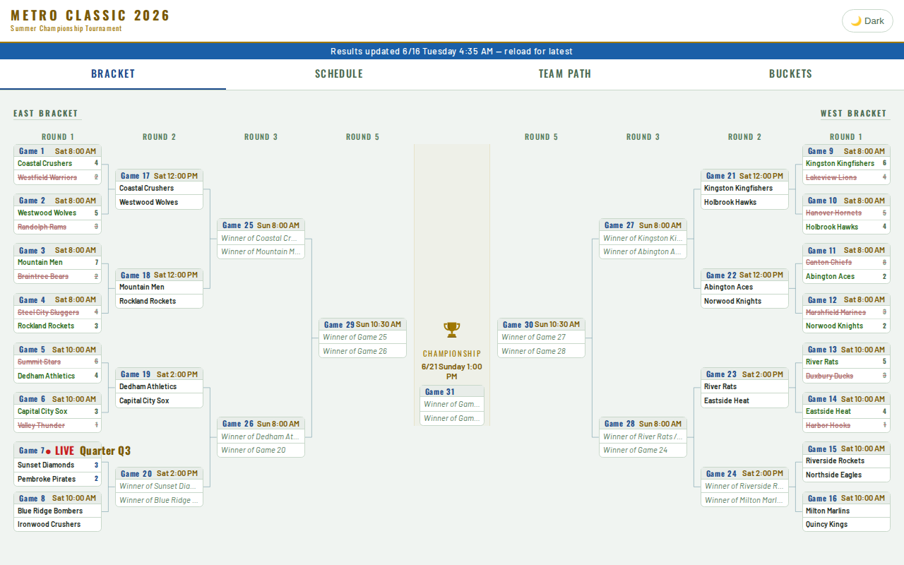
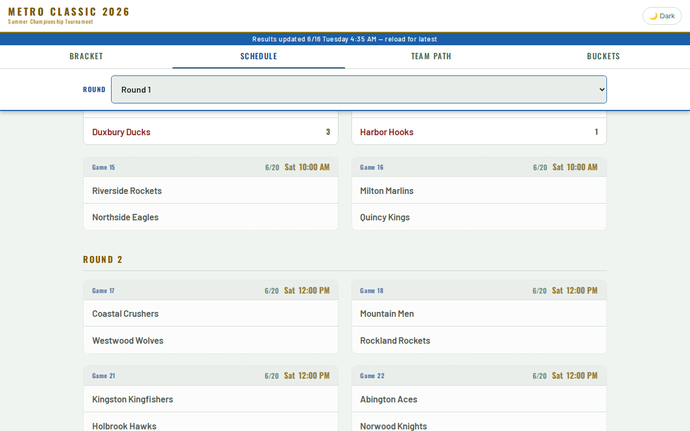
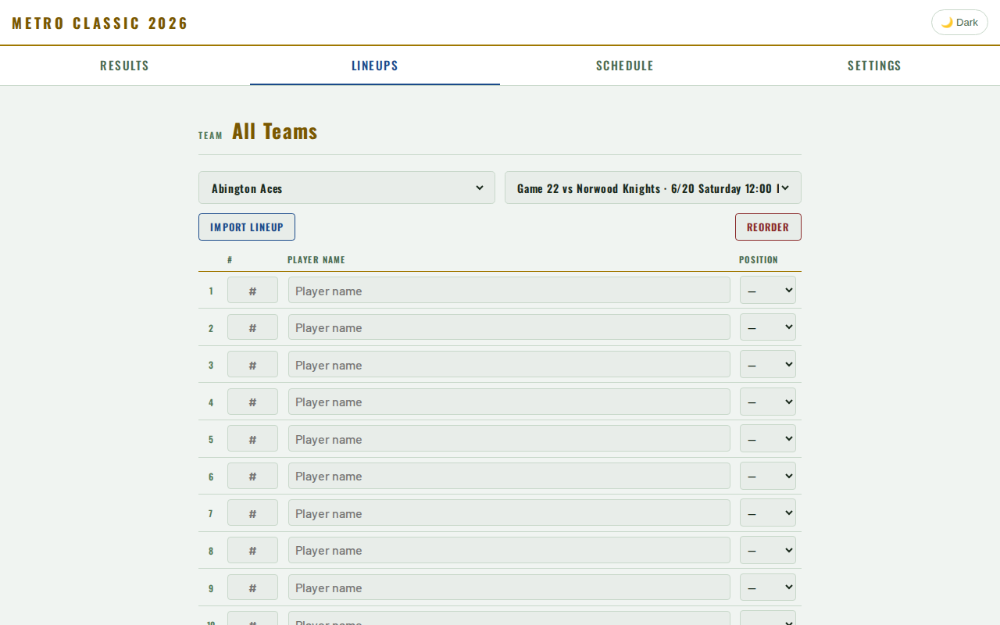
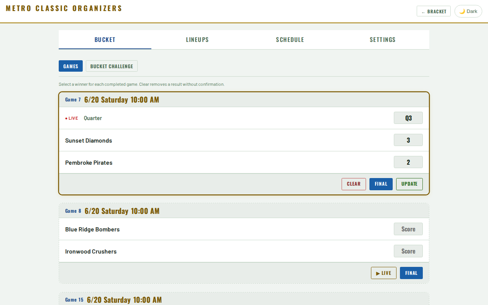
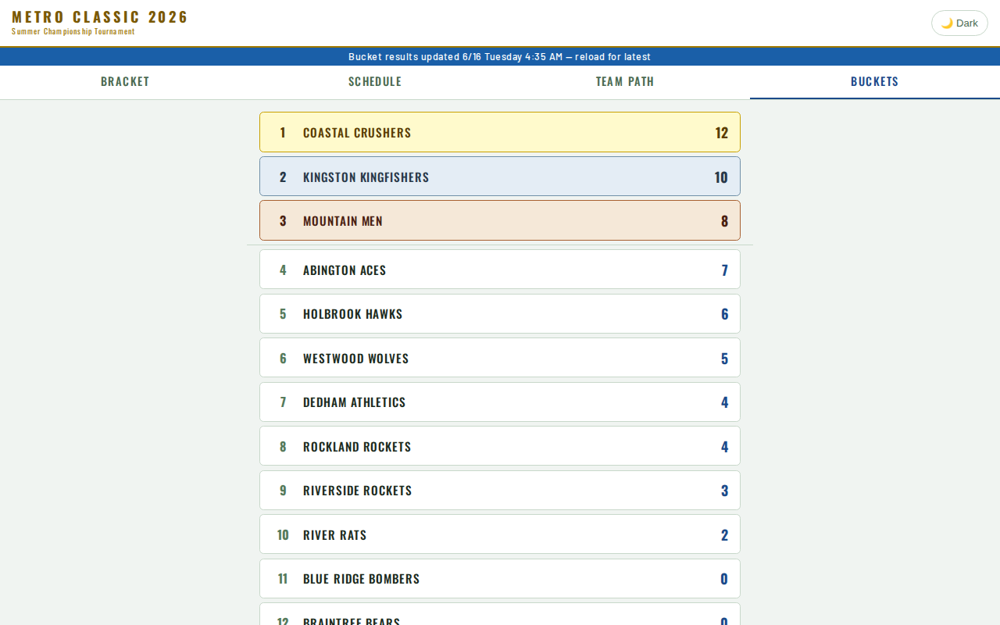

See it in action
Real screenshots from a running tournament. Try the live demo →
On your phone first — everyone's actual view at the field.













Share/Download/Print and the multi-tournament switcher are shipped features without a screenshot yet — see them in the live demo →